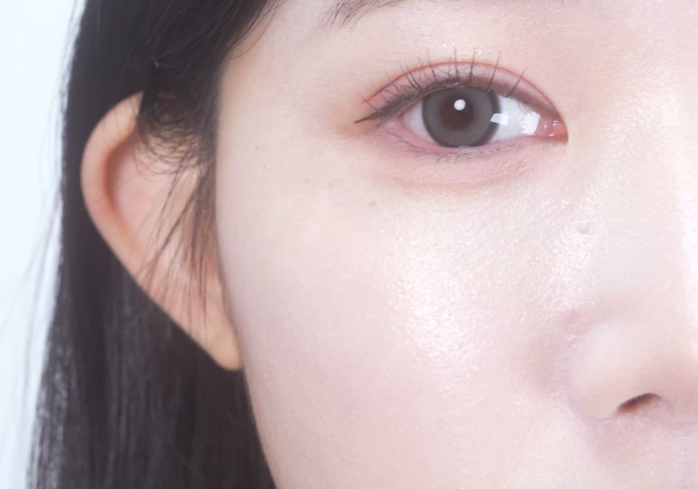
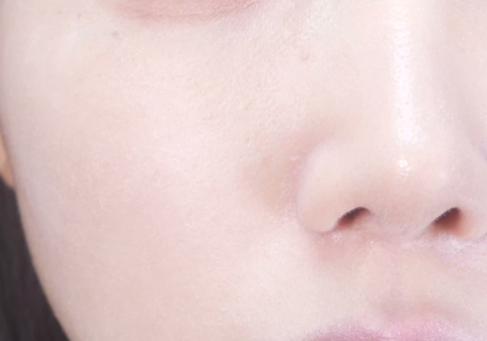
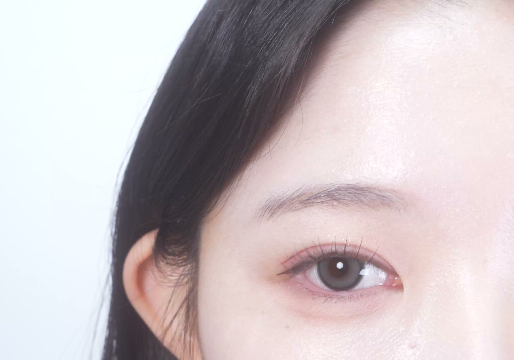
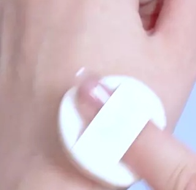

공들인 메이크업 위에,
올라온 유분을 톡톡.
번들거리는 코·이마·나비존에 두드려
보송하게 정리하는 파우더 밤.

나비존에 톡톡
실제 사용 장면 · 메이크업 효과이며
사용 결과는 개인에 따라 다를 수 있습니다.
THE CLOUD FILTER POWDER BALM
유분 정리에서,
매끈한 피부 표현까지.

기름종이를 찾게 되는 순간,
보송함에 부드러운 블러 마무리를 더해요.
번들거리는 곳을 골라,
코에도, 이마에도.
퍼프로 쓸어내리지 않고 가볍게 두드려요.

코 · 콧볼

이마 · T존
실제 사용 장면 · 사용 결과는 개인에 따라 다를 수 있습니다.
POWDER IN BALM
퍼프에 묻히는 고체 밤,
피부 위에는 보송하게.


가루를 덜어 쓸 필요 없이,
원하는 부위에 얇게 발라주세요.
좁은 콧볼까지 닿는 퍼프,
양은 손등에서 한 번.

거울 & 슬림한 물방울 퍼프

손등에서 도포량 조절
퍼프에 소량 묻혀 손등에 고르게 편 뒤,
유분이 신경 쓰이는 부위에만 톡톡.
사용 전 티슈나 화장솜으로 내용물 표면을 가볍게 닦아주세요.
얼굴에서는 문지르지 않고 가볍게 두드려 밀착시켜주세요.
수정할 때도,
메이크업 전·후에도.
외출 중
올라온 유분을 정리할 때
번들거리는 부위에 소량씩 두드려요.
메이크업 후
보송하게 마무리할 때
유분이 신경 쓰이는 곳에 얇게 발라요.
메이크업 전
매끈한 베이스를 준비할 때
모공·요철이 신경 쓰이는 곳에 프라이머로.

THE CLOUD FILTER POWDER BALM
더 클라우드 필터 파우더 밤
3.5g · 거울 & 퍼프 내장